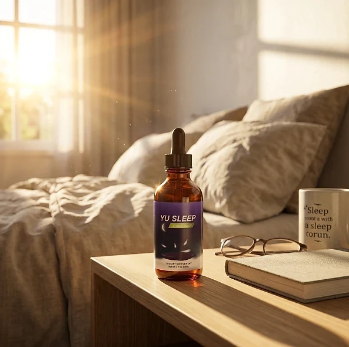
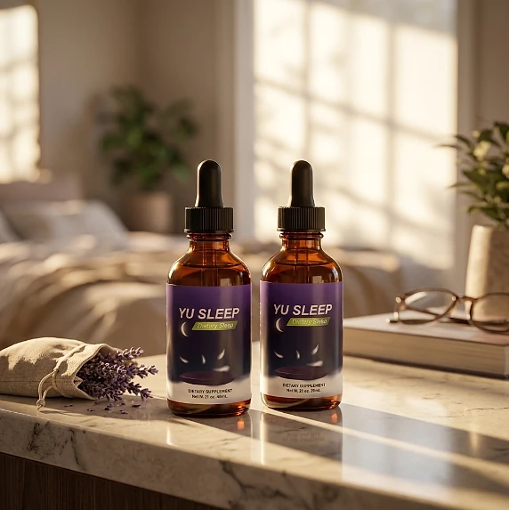
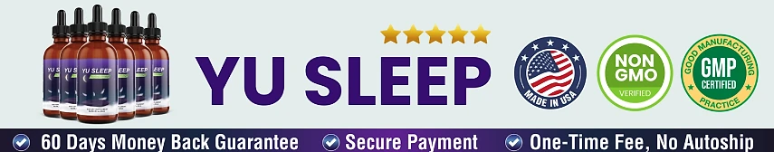

What Is Yu Sleep And How Does It Work?
Yu Sleep is a liquid dietary supplement designed to support falling asleep more easily, staying asleep through the night, and waking up rested for adults who want to address the restless nights, early-morning wake-ups, and tired mornings that can build up with age and busy routines through a natural, dependable approach — without complicated routines or temporary quick fixes.
It utilizes a simple nightly serving of two droppers that combines a low dose of Melatonin with Red Tart Cherry, Magnesium Glycinate, Apigenin, Lemon Balm, 5-HTP, L-Theanine, GABA, and Vitamins B2 and B6 to support relaxation, the natural sleep-wake cycle, and restful sleep, helping the body maintain its natural balance night after night.
The ingredients in Yu Sleep are plant extracts, amino acids, a mineral, and vitamins that, according to the official website, work with the body's natural rhythm instead of relying on high-dose melatonin, particularly for adults who prefer one simple step before bed over multiple products or complicated plans.
Rather than acting as a short-lived artificial fix, Yu Sleep focuses on a whole-formula approach, working gradually alongside a steady bedtime routine to help maintain calmer evenings, deeper rest, and long-term wellness.
With consistent nightly use, many users report falling asleep faster, fewer nighttime wake-ups, and waking up feeling refreshed, especially when combined with a regular sleep schedule, less screen time at night, and a balanced lifestyle.
From a practical standpoint, Yu Sleep is a nightly sleep support liquid in a 2 fl oz (60 ml) dropper bottle designed to support wellness from within — helping you rest well and stay in control of your health.
The official website describes the formula as all-natural and plant-based, and the label publishes a Supplement Facts panel. Yu Sleep is designed for regular nightly use, focusing on safety, purity, and quality for those seeking a non-prescription route to better rest.
Yu Sleep Ingredients
Every 2 ml serving of Yu Sleep (two full droppers) contains two B vitamins, 0.9 mg of Melatonin, and a 637 mg proprietary blend listed on the Supplement Facts panel, chosen to support relaxation and restful sleep as part of a consistent nightly routine:
Red Tart Cherry Juice Concentrate: A fruit concentrate included, according to the official website, to support the sleep-wake cycle.
Magnesium Glycinate: A form of magnesium associated with muscle relaxation and restorative sleep.
Apigenin: A plant compound found in chamomile, chosen to support winding down at bedtime.
Lemon Balm Extract: A traditional calming herb used to support a relaxed state in the evening.
5-HTP (Griffonia Seed Extract): A compound the body uses to produce serotonin.
L-Theanine and GABA: An amino acid from tea and a calming neurotransmitter, included to promote relaxation and quiet a busy mind.
Melatonin (0.9 mg): A deliberately low dose of the hormone that signals to the body that it is time to rest.
Vitamin B2 (0.5 mg) and Vitamin B6 (0.5 mg): Vitamins that provide 38% and 29% of the Daily Value and take part in the body's own melatonin and serotonin pathways.
Together, these ingredients are intended to support calm evenings, deep rest, and refreshed mornings from within. The label does not show the amount of each blend component. The other ingredients are distilled water, glycerin, medium invert syrup, citric acid, erythritol, sodium citrate dihydrate, natural flavors, gum arabic, xanthan gum, and potassium sorbate.
Yu Sleep is designed for nightly use, offering a natural, non-prescription approach to supporting sleep, without complicated routines.
Yu Sleep Side Effects
Yu Sleep is generally considered well tolerated and is designed for adults of different ages and lifestyles who are looking for a natural and balanced approach to better sleep, especially those who prefer an easy nightly dropper routine to support relaxation, rest, and well-being without resorting to risky solutions with severe side effects.
All ingredients used in Yu Sleep are described on the official website as natural and plant-based, and the melatonin dose, 0.9 mg per serving, is lower than what many sleep products use, which the website presents as a way to avoid next-morning grogginess.
With no widespread reports of serious side effects, Yu Sleep is generally considered a well-tolerated option. Two points deserve attention. The formula contains 5-HTP, which should not be combined with antidepressants or other medicines that act on serotonin without medical guidance, and melatonin and the calming herbs can cause drowsiness, so it should be taken only at bedtime and never before driving. Long-lasting insomnia should be evaluated by a doctor. It is not intended to diagnose, treat, cure, or prevent any disease, and individual results may vary.
As a general rule for supplements of this kind, pregnant or nursing mothers, people under the age of 18, and individuals with a known medical condition or taking prescription medication should consult a physician before using Yu Sleep, and the cautions printed on the bottle should always be followed, ensuring it fits safely within their personal wellness plan.
Yu Sleep Dosage
The recommended Yu Sleep dosage is two full droppers (2 ml) each night, and it is designed to fit easily into a bedtime routine, making consistency simple and convenient. Formulated as an easy liquid with a dropper, it requires no capsules to swallow, no powders to mix, and nothing complicated to prepare.
The recommended approach, according to the official website, is to take two droppers of Yu Sleep about 30 minutes before bed. The website suggests squeezing the liquid into the mouth, preferably under the tongue, holding it for about thirty seconds, and then swallowing, which allows its ingredients to work consistently.
For best results, consistency is key. Each 2 fl oz (60 ml) bottle holds approximately 30 servings, a one-month supply, and the official website recommends taking it every night for at least 21 nights in a row before judging the results, so many people make it part of an ongoing wellness routine.
There is no need for complex schedules or multi-step routines. One simple nightly serving is designed to build lasting support gradually alongside a regular sleep schedule, a dark and quiet bedroom, and an active lifestyle. A practical tip from the official website is to keep the bottle on the bedside table so the habit is not forgotten.
As with any dietary supplement, it's important not to exceed the recommended dose and to check the label on your bottle. Yu Sleep works best when used regularly, combined with proper hydration, balanced nutrition, and healthy daily habits.
Yu Sleep – Refund Policy
You can order Yu Sleep with confidence, knowing that every purchase is protected by a 60-day money-back guarantee counted from the purchase date. This allows you to try the formula and decide if it delivers the support you expect.
According to the refund policy linked on the official website, any product purchased online can be returned within 60 days after the purchase. The policy recommends taking the drops daily for at least 21 days before deciding. It also states that shipping and handling are not refundable, so refunds are issued at around 85% of the purchase amount, that return postage is paid by the customer, and that the guarantee applies once: a second purchase after a refund is not eligible.
How the refund process works: If you decide Yu Sleep is not right for you, email the support desk with your full name, email address, invoice, and order number, and say exactly what you are returning. Then send the package to the return address given in the policy, in Aurora, Colorado, with the order number on a note inside, and send the tracking number to support. According to the policy, the refund is issued once the tracking number is received.
Customer Support Contact Information: support@yu-sleep.com, as listed on the contact page linked from the official website.
Refund Processing Time: The policy says the refund is issued as soon as the tracking number is received, and that the posting date of the package is the date that counts. The time for the amount to appear on your statement depends on your bank or card company.
This refund policy is designed to give customers a clear and transparent experience when trying Yu Sleep.
Yu Sleep Customer Reviews
-
Mary D. — Tampa, FLVerified Purchase – 6 Bottles
“For years, I chalked up my sleep issues to 'just getting older.' I'm 56, and I thought it was normal to wake up at 3 AM, toss and turn for hours struggling to fall back asleep and wake up exhausted. But after using Yu Sleep before going to bed for just a few days, I actually sleep through the nights and feel rested in the mornings—like I did in my 20s. My energy is back, my mood is better, I'm down 2 dress sizes and even my afternoon coffee cravings are gone. My kids even said 'Mom, you're fun again!'”
-
Lisa M. — Chicago, ILVerified Purchase – 6 Bottles
“My husband and I had been sleeping in separate beds for two years because of my tossing and turning. I felt like a failure as a wife... like I was broken. In the first night of taking Yu Sleep, I fell asleep in minutes and slept all the way till the morning. After just two weeks, we're back in the same bed. He said, 'I got my wife back.' I cried happy tears!”
-
Susan R. — Denver, COVerified Purchase – 6 Bottles
“I still can’t believe something this gentle could work so deeply—but Yu Sleep gave me my nights back. I not only fall asleep in minutes, but those 3 am wake-ups are long long and I wake up rested. Thank you!”
Yu Sleep – Where To Buy
Yu Sleep is sold through its official website, so if you decide to try it, it's important to be careful about where you purchase it. The official website is the only sales channel the manufacturer lists, and it does not point to marketplaces such as Amazon, eBay, or Walmart.
Listings on third-party platforms may look similar but cannot be verified as authentic, raising concerns about safety, quality, and ingredient freshness. Products purchased outside the official source may not be covered by the 60-day guarantee.
For this reason, most customers recommend purchasing Yu Sleep only through the official website. Buying directly from the official source ensures you receive the authentic original product, with access to customer support and the full guarantee. According to the official website, orders ship within 24 hours in discreet packaging and usually arrive in 5 to 7 business days within the United States.
To avoid counterfeit batches and ensure maximum quality, always verify that you are ordering from the official Yu Sleep website before completing your purchase.
To ensure you’re getting the authentic product, most users choose to visit the official website.
Is Yu Sleep A Scam?
Based on what the official website and the product label disclose, Yu Sleep does not appear to be a scam. It is a real liquid supplement, sold through an established retailer, and formulated to support relaxation, restful sleep, and refreshed mornings as part of a consistent routine.
The ingredients used in Yu Sleep — Melatonin, Red Tart Cherry, Magnesium Glycinate, Apigenin, Lemon Balm, 5-HTP, L-Theanine, GABA, and Vitamins B2 and B6 — are well known in the wellness field, and the label publishes a Supplement Facts panel with the vitamin and melatonin amounts and the total of the blend for transparency.
In addition to its formula, Yu Sleep uses a low melatonin dose of 0.9 mg per serving, clearly stated on the label, and the official website publishes its refund, shipping, and contact pages, with a focus on safety, purity, and consistency.
Many users report falling asleep faster and waking up less during the night and an easy nightly habit, making Yu Sleep a practical option for those seeking natural support for sleep. Some claims on the official website are strong and should be read with caution: results vary from person to person, and no supplement replaces medical care or prescribed treatment.
Yu Sleep is backed by a 60-day guarantee. A fair point of attention is that, according to the published policy, shipping and handling are not refunded, return postage is paid by the customer, and the guarantee can be used only once, which is worth knowing before ordering.
If you're looking for a simple nightly liquid to support relaxation, deep rest, and well-being without complicated routines, Yu Sleep is worth considering — especially when purchased directly from the official website.
For those who want to verify product details or check current availability, the official Yu Sleep website remains the safest option.

Check Availability On Official Website
